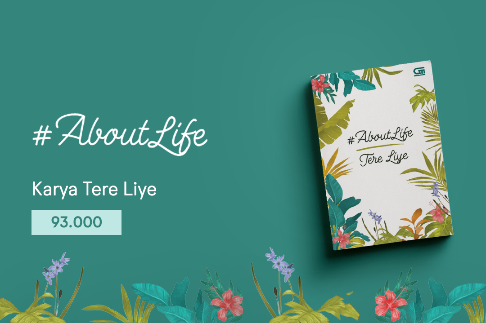

Ada masanya kita hanya butuh diam. Tidak bicara apa pun, tidak bicara pada siapa pun. Cukup direnungkan dalam-dalam, kemudian kita akhirnya paham banyak hal. Pun ada masanya, saat membaca buku, melihat kembali kutipan-kutipan lama, direnungkan, kita bisa menemukan banyak hal yang mengembalikan pemahaman terbaiknya. Buku ini berisi 100 kumpulan kutipan Tere Liye tentang kehidupan, melengkapi dua buku sebelumnya, #AboutLove (tentang cinta) dan #AboutFriend (tentang persahabatan). Hadiahkan buku-buku ini untuk keluarga dan teman terbaik kita..